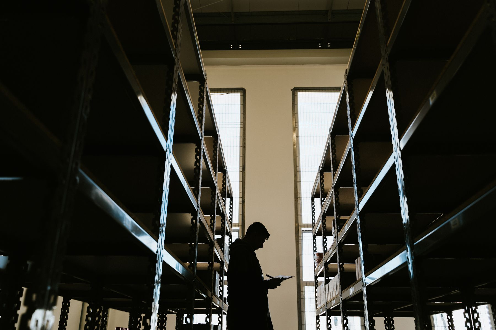

Logistik-Projekte › im Takt geliefert.
Standort-Rollouts, Lager- und Transport-Vorhaben verlässlich geliefert — als externe Projektleitung, die den operativen Takt, den Schichtbetrieb und die Saisonspitze kennt. Klassisch, agil oder hybrid, für Logistik und 3PL in Organisationen jeder Größe, DACH-weit.
In der Logistik kollidiert jedes Projekt mit dem laufenden Betrieb.
Ein neues Lagersystem, ein Standort-Rollout, eine neue Transport-Steuerung — all das muss eingeführt werden, während Waren weiter ein- und ausgehen. Genau hier scheitern Logistik-Vorhaben: an einer Steuerung, die den operativen Takt verfehlt, an Rollen, die im Schichtbetrieb unklar bleiben, und an Plänen, die die Saisonspitze ignorieren. Die Technik ist dabei selten der Engpass.

Projekt gegen Tagesgeschäft
Das Vorhaben läuft, aber die Schlüsselpersonen stehen gleichzeitig in der Disposition und am Wareneingang. Erst eine entlastende Steuerung sorgt dafür, dass das Projekt neben dem täglichen Versandschluss vorankommt.
Rollen im Schichtbetrieb unklar
Wer entscheidet, wenn die Projektleitung im Spätdienst nicht erreichbar ist? In der Logistik braucht es Rollen und Eskalationswege, die über alle Schichten und Standorte hinweg tragen.
Rollout verfehlt die Standort-Realität
Was an einem Lager funktioniert, scheitert am nächsten. Layout, Mengen und Abläufe unterscheiden sich. Ein Rollout-Plan, der das ignoriert, produziert an jedem Standort dieselbe Überraschung neu.
Saison nicht eingeplant
Der Go-live fällt in die Hochsaison, weil der Plan die Mengenspitze nicht kannte. Was in ruhigen Wochen tragfähig wäre, bricht unter Last — und der Betrieb fällt auf Notlösungen zurück.
Vier Leistungsfelder — Projektsteuerung, die die Logistik versteht.
Vier Wege, ein Logistik-Vorhaben sicher ans Ziel zu bringen — und einer davon passt zu Ihrer Lage. Mal braucht ein kritisches Projekt kurzfristig eine erfahrene Leitung, mal rollt ein neues Verfahren über mehrere Lager aus, mal steht eine Systemeinführung an, mal ist ein Vorhaben schon entgleist. Für jede Lage gibt es ein eigenes Leistungsfeld. Der gemeinsame Nenner: Wir schreiben Konzepte und setzen sie selbst um — wir stehen am Lager, in der Disposition und an der Rampe und verantworten die Lieferung mit.
Geschäftsleitung und operative Leitung holen wir früh an einen Tisch — ein Logistik-Projekt entscheidet sich an beiden Enden. Die Steuerung muss den Schichtbetrieb aushalten, also bekommen Rollen und Eskalationswege eine Form, die rund um die Uhr trägt. Den Go-live timen wir bewusst um die Mengenspitze herum. Was am Ende zählt, ist ob der Versand auch am vollsten Tag durchläuft — daran messen wir den Erfolg, der grüne Statusbericht folgt daraus.
Interim-Projektleitung Logistik
Kurzfristig eine erfahrene Projektleitung für ein kritisches Logistik-Vorhaben — mit Verantwortung für Termin, Qualität und den laufenden Betrieb, und sauberer Übergabe an Ihre Linie.
Standort- & Rollout-Steuerung
Mehrstufige Rollouts über Lager und Standorte hinweg — mit einem Vorgehen, das Standort-Unterschiede erwartet, aus dem ersten Go-live lernt und die Welle kontrolliert ausweitet.
System-Einführung begleiten
Bei der Einführung neuer Lager- oder Transport-Steuerung übernehmen wir die fachliche Projektsteuerung und Anforderungs-Klärung — vor der Software-Auswahl, gemeinsam mit dem IT-Partner.
Recovery & Audit
Ein Logistik-Projekt ist entgleist — Termin verfehlt, Betrieb gestört, Stimmung schlecht. Wir prüfen kompakt, definieren den Recovery-Pfad und steuern bis zur Stabilisierung.
Fünf Phasen — vom Audit bis zum stabilen Go-live.
Nach jeder Phase entscheiden Sie, ob wir weitermachen — Verbindlichkeit und Nutzen wachsen Schritt für Schritt. Wir wählen pro Phase das Vorgehen, das zum Vorhaben passt — klassisch, agil oder hybrid — und richten den Takt nach Versand und Saison aus.
Projekt-Audit
Auftrag, Umfang, Stakeholder, Steuerung, Lieferpfad und Standort-Realität im Überblick. Ergebnis: ein kompakter Befund mit klarer Empfehlung.
Steuerungs-Setup
Auftrag neu formuliert, Rollen über die Schichten geklärt, Steuerungs-Rhythmus, Eskalations-Logik und ein Reporting, das die operative Leitung wirklich nutzt.
Erster Standort
Wir steuern den ersten Go-live an einem Standort — bewusst außerhalb der Spitze — und ziehen daraus die Vorlage für die weiteren.
Welle & Skalierung
Kontrollierter Rollout auf weitere Standorte, mit Lerneffekten aus dem Piloten, klaren Abhängigkeiten und einem Plan, der die Saison respektiert.
Übergabe an Ihre Linie
Saubere Übergabe an Ihre interne Leitung — mit Dokumentation, Coaching der Nachfolge und auf Wunsch einer befristeten Sparring-Phase.
Wo Projektsteuerung in der Logistik den Unterschied macht.
Eine Auswahl der Vorhaben, die wir am häufigsten begleiten. Gemeinsamer Nenner: Es ändert sich etwas an einem laufenden, mengenkritischen Betrieb — und ob es gelingt, entscheidet vor allem die Steuerung. Die Software folgt. Ein misslungener Go-live kostet über gestörte Lieferungen weit mehr als die Steuerung, die ihn verhindert hätte.
Lagersystem-Einführung
Die Einführung einer neuen Lagerverwaltung fachlich steuern — von der Anforderung bis zum stabilen Go-live, bei laufend gesichertem Versand.
Transport-Steuerung neu aufsetzen
Tourenplanung und Transport-Steuerung umstellen — mit klaren Rollen zwischen Disposition, Fahrern und Kundenservice.
Standort-Rollout
Ein neues Verfahren über mehrere Lager ausrollen — kontrolliert, standortgerecht und aus dem ersten Go-live gelernt.
Netzwerk- & Standort-Verlagerung
Lager zusammenlegen, verlagern oder neu anbinden — als Programm gesteuert, damit die Belieferung durchgängig läuft.
Vorbereitung auf die Hochsaison
Abläufe, Kapazitäten und Notfallpläne rechtzeitig vor der Spitze in Form bringen — als ruhig geführtes Vorhaben, das den hektischen Kraftakt erspart.
Automatisierungs-Projekte
Die Einführung neuer Technik im Lager begleiten — mit realistischem Lieferpfad und einem Betrieb, der währenddessen weiterläuft.
Welche Methode passt zu einem Logistik-Vorhaben?
In der Logistik bestimmt der operative Takt die Methode. Hier, welche Ansätze wann tragen — als Grundlage, damit Sie selbst mitentscheiden, welches Vorgehen zu Ihrem Lager passt.
Wasserfall
Für planbare Vorhaben mit festem Termin — etwa einen Standort-Go-live, der lange feststeht. Klare Phasen und Meilensteine geben dem Lagerbetrieb Planungssicherheit.
Scrum
Für Systemeinführungen, deren Anforderungen sich erst am realen Lagerbetrieb schärfen — geliefert in kurzen Zyklen. Definiert im Scrum Guide von Scrum.org.
Kanban
Macht den Arbeitsfluss sichtbar und begrenzt Parallelarbeit — passend für den laufenden Logistik-Betrieb mit unregelmäßig eintreffenden Aufträgen.
Skalierte Agilität (SAFe)
Wenn ein Rollout viele Teams über mehrere Lager-Standorte koordinieren muss. Beschrieben von Scaled Agile.
PRINCE2
Für Vorhaben mit festen Phasen-Gates und Nachweispflichten entlang der Lieferkette. Herausgegeben von AXELOS.
PMBOK-Wissensbasis
Die Wissensbasis des Project Management Institute — eine gemeinsame Sprache für Auftrag, Risiko und Stakeholder über Lager, Transport und IT hinweg.
Ein Vorgehen, das in jedem Logistik-Modell verlässlich greift.
Die konkreten Abläufe unterscheiden sich — die Logik bleibt dieselbe: Steuerung, die den operativen Takt kennt, Rollen über die Schichten, ein Rollout, der aus dem ersten Standort lernt. Darauf bauen wir auf, ob beim Kontraktlogistiker, in der Spedition oder in der eigenen Werkslogistik eines Herstellers.
Kontraktlogistik & Dienstleister
Wenn ein Vorhaben mehrere Kunden, Standorte und Systeme berührt, fehlt oft eine Instanz, die das Ganze verantwortet. Genau diese Rolle bringen wir mit.
Spedition & Transport
Wo Disposition, Flotte und Kundenservice zusammenspielen müssen, sorgen wir für Rollen und Steuerung, die auch unter Termindruck halten.
Werks- & Handelslogistik
In der eigenen Logistik von Herstellern und Händlern verbinden wir das Projekt mit dem Tagesgeschäft — damit die Belieferung durchgängig bleibt.
Was unsere Logistik-Projektsteuerung von der üblichen Beratung unterscheidet.
Nah am operativen Takt
Wir steuern dort, wo das Vorhaben entschieden wird — am Lager, in der Disposition, an der Rampe, mitten im Geschehen.
Saison & Schicht mitgedacht
Unsere Pläne respektieren Mengenspitzen und Schichtbetrieb. Den Go-live-Zeitpunkt rund um die Hochsaison legen wir bewusst fest.
Dabei, bis der Betrieb läuft
Wir geben das Konzept ab und bleiben am Lager — bis der neue Ablauf durch jede Schicht verlässlich greift, auch durch die erste Spitze.
Befristetes Mandat
Unser Ziel ist, uns überflüssig zu machen. Die Übergabe an Ihre Disposition und Projektleitung steht von Tag eins fest im Plan, als selbstverständlicher Teil des Vorgehens.
Drei Prinzipien, auf die Sie sich verlassen können.
In der Logistik wirkt Steuerung dann, wenn sie nah am Geschehen ist, klar entscheidet und Spuren hinterlässt, die andere nachvollziehen können. Unsere Methoden sind erprobt und gängig — Ihre Teams führen sie eigenständig weiter.
Nähe zum Betrieb
Wir steuern am Ort des Geschehens. Eine Entscheidung ist nur so gut wie ihr Bezug zur operativen Realität.
Entscheidungen, die fallen
Steuerung, die wirklich steuert. Eskalationen werden entschieden und landen dort, wo sie hingehören und gelöst werden.
Übergabe, die hält
Rollen, Routinen und Dokumentation sind so übergeben, dass der neue Ablauf im Betrieb bleibt — eigenständig und dauerhaft.
Fragen, die in den ersten Gesprächen immer kommen.
Was kostet Projektmanagement-Beratung in der Logistik?
Wo fangen wir an?
Warum scheitern so viele Logistik-Projekte?
Klassisch, agil oder hybrid — was passt für Logistik?
Übernehmen Sie auch die Auswahl der Lager- oder Transport-Software?
Arbeiten Sie vor Ort oder remote?
Wie lange dauert ein Logistik-Projekt-Mandat?
Begleiten Sie auch einen Rollout über mehrere Standorte?
Arbeiten Sie auch mit kleineren Logistik-Betrieben?
Projektmanagement › wieder in den Takt bringen.
Der erste Schritt ist ein Erstgespräch von 30–45 Minuten. Wir klären Ihre Ausgangslage, die wichtigsten Engpässe und ob CX der richtige Partner ist. Wenn nicht, verweisen wir auf jemanden, der besser passt.
Erstgespräch anfragen →Diese Fragen klären wir, bevor ein Logistik-Vorhaben in den laufenden Betrieb greift.
Logistik-Projekte müssen funktionieren, während Waren weiter fließen. Wir prüfen operativen Takt, Schichten, Standorte, Saison und Systemabhängigkeiten vor dem Go-live.
Wie stark ist der Betrieb betroffen?
Wir klären Auswirkungen auf Wareneingang, Kommissionierung, Disposition, Rampe, Versand und Kundenservice.
Welche Schichten und Standorte müssen mitziehen?
Wir definieren Rollen, Eskalation und Kommunikation so, dass Entscheidungen über alle Schichten tragen.
Wann ist ein Go-live realistisch?
Wir planen Tests, Peak-Zeiten, Rückfallwege und Standortwellen so, dass der Versand stabil bleibt.
Wer übernimmt nach der Einführung?
Wir sichern Übergabe, Dokumentation und Linienverantwortung, damit der neue Ablauf nicht vom Projektteam abhängt.
Prozesse, Architektur, Change.
Johannes Reusch und Hans-Helmut "Hannes" Scheel führen CEx gemeinsam. Beide begleiten Mandate mit ihrem Team persönlich. Senior- und Executive-Erfahrung für Ihr Projekt von Anfang bis Ende.


- Branchenübergreifend · vom Mittelstand bis zum Konzern
- Strukturiertes Vorgehen · nachvollziehbar und dokumentiert
- DACH-weit tätig